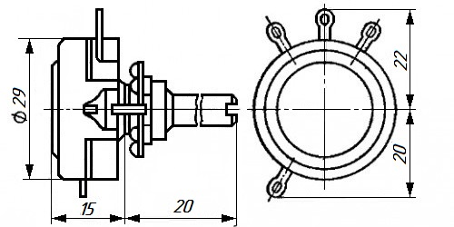
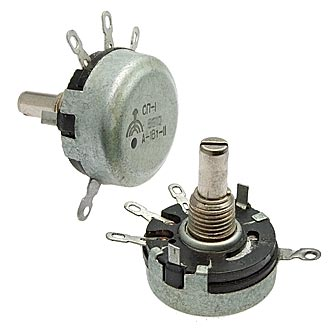

Резистор переменный СП-1
Резисторы СП-1 переменные регулировочные непроволочные. Одинарные композиционные цилиндрические однооборотные с круговым перемещением подвижной системы, с концом вала ВС-2 и ВС-3, для навесного монтажа. Предназначены для работы в цепях постоянного, переменного и импульсного токов.


Рис. 1 - Внешний вид и габаритные размеры переменного резистора СП-1
Таблица 1
| Функциональная характеристика | А - линейная |
| Конструктивные особенности | цилиндрический одинарный без стопорения оси |
| Габаритные размеры | 35×28×45 мм |
| Тип вала | ВС2-20 (сплошной со шлицем) |
| Длина вала (длина выступающей части) | 20 мм |
| Масса | 22,5 г |
| Диаметр вала | 6 мм |
| Номинальная мощность | 1 Вт |
| Макс. или предельное рабочее напряжение | 500 В |
| ТКС - температурный коэффициент сопротивления | 0,1% |
| Допустимое отклонение | ±20% |
| Сопротивление изоляции | 5000 MОм |